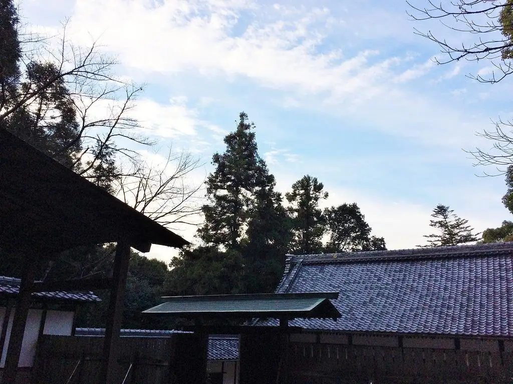
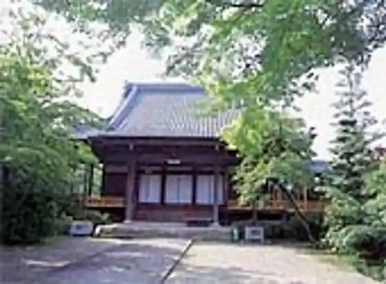
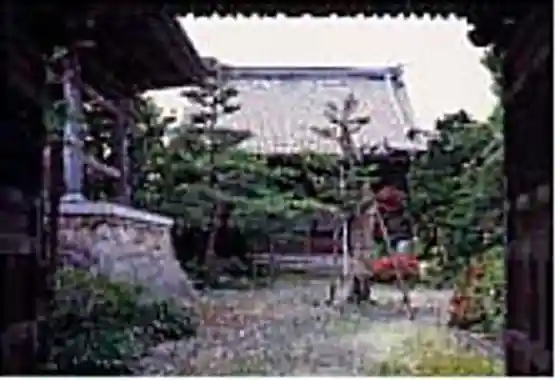
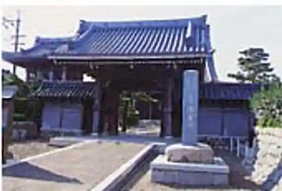
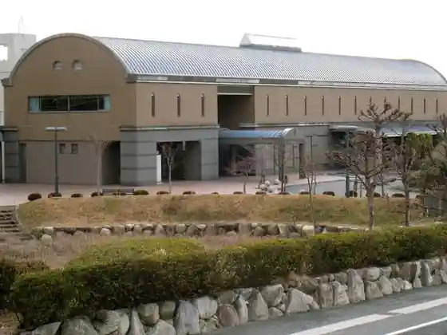

Japan / Mie / Asahicho
Asahicho, Mie: things to do, food and stays
Asahicho · Mie
Asahicho
Highlighted on the Mie map.

Sights
Komukai Shrine
Asahicho, Mie · 059-377-5658 · Official / source link
Zensho Tera
Asahicho, Mie · 059-377-2181 · Official / source link

Saiko Tera
Asahicho, Mie · 059-377-2203 · Official / source link

Josen Bo
Asahicho, Mie · 059-377-2406 · Official / source link

Asahicho History Museum
Asahicho, Mie · 059-377-6111 · Official / source link

Tachibana Shu Bu Tanjo Chi Iseki
Asahicho, Mie · 059-377-6111 · Official / source link
Masamitsu Tera
Asahicho, Mie · 059-377-2837 · Official / source link
Nawa Nama Haiji Ato
Asahicho, Mie · 059-377-6111 · Official / source link
I Ta Shrine
Asahicho, Mie · 059-377-5658 · Official / source link
Tokaido (Asahicho)
Asahicho, Mie · 059-377-6111 · Official / source link
Asobikkusu Asahi
Asahicho, Mie · 059-377-5111 · Official / source link
Asahicho Museum
Asahicho, Mie · 059-377-6111 · Official / source link
Asahi Baths
Asahicho, Mie · 059-377-5111 · Official / source link